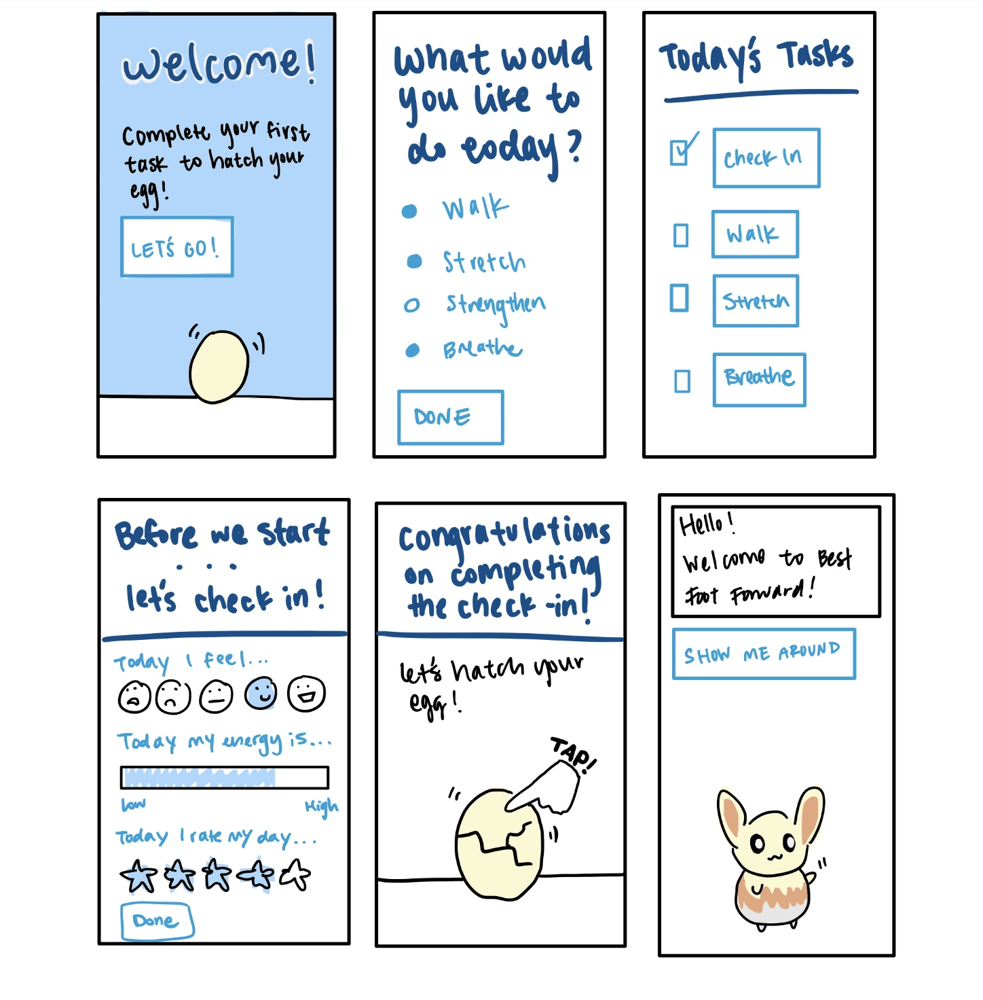

The Seattle's Children Hospital had a system in place to encourage patients in the in-patient cancer care unit to remain active during their stay which involves rewarding a foot sticker for each mile they walked. Patients could display stickers outside their door or on their walls as decoration, however they discovered that this wasn't particularly motivating for patients and sought out an app to better encourage their patients to remain active!
Seattle Children's Hospital Physical Therapist:
With the return of cozy nostalgia lifestyle-based games like Animal Crossing and the increasing popularity of gamifying exercise, I came up with an idea for a motivational world building style game where exercising & positive health practices grant points. Points go towards virtual home improvements like planting tree orchards, space personlization and customizations.
